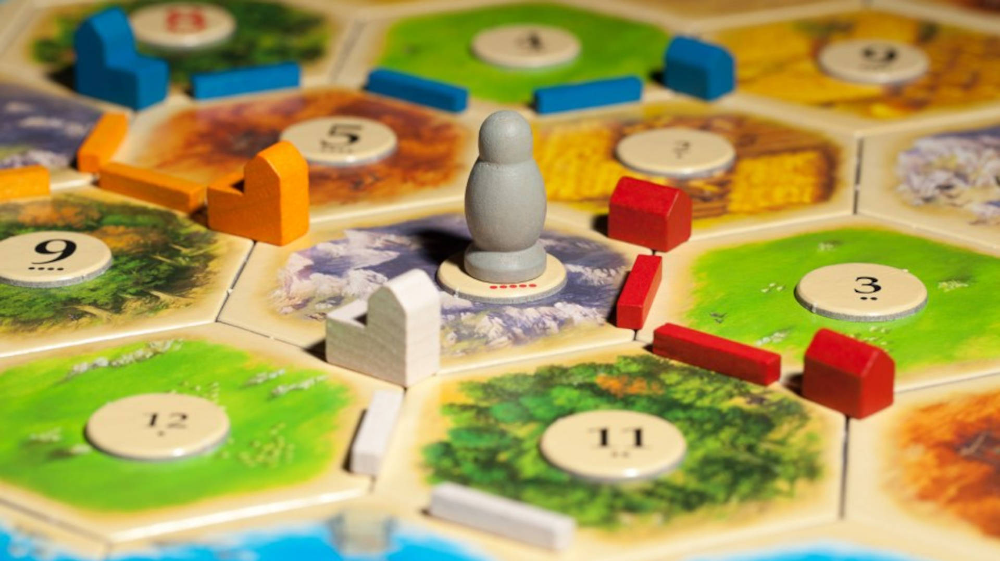

Setup: Component Integration: Incorporate the additional player pieces (settlements, cities, and roads) from the extension pack into the base game's components. Board Expansion: Attach the extra hexagonal tiles to enlarge the game board, adhering to the base game's placement rules to maintain balance. Resource Distribution: Evenly distribute resources across the extended map to ensure fairness and strategic diversity for all players. Development Card Integration: Shuffle the development cards from the expansion pack with the base game's stack to create a combined draw pile. Initial Placement Order: Determine the starting order, either through a random selection method or by mutual agreement among players, for the initial settlement and road placements. Tips for Playing: Strategic Expansion: Encourage players to plan their expansions carefully, considering the larger map and potential competition for resources and territory. Resource Management: Emphasize efficient resource gathering and trading, as the extended player count can heighten the competition for scarce resources. Diplomatic Negotiation: With more players, diplomacy becomes crucial. Encourage negotiation, alliances, and deal-making among participants to gain an edge. Adaptability: Remind players to stay flexible and adapt their strategies as the game progresses, as the increased player count introduces more variables and unpredictability. Enjoyment of Scale: Highlight the excitement of a larger-scale game, where alliances and rivalries can form on a grander stage, enhancing the overall experience for all players. By following these setup steps and incorporating these gameplay tips, the Caftan 5-6 player extension can offer a more dynamic and engaging experience for a larger group of players.
